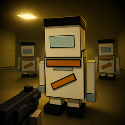

ENTERING THE BACKROOMS
BOXHEAD
격리 구역을 확인하는 중...
BACKROOM LOW · v62.0
LOW-POLY SURVIVAL FPS
BOXHEAD: BACKROOM LOW
Boxhead식 웨이브 생존, 무기 해금, 벽·지뢰 설치를
백룸풍 공간에서 혼자 살아남는 1인칭 저폴리 FPS. 인터넷 연결과 서버 설정 없이 바로 플레이할 수 있다.
맵·난이도·그래픽 상세 설정
PC 성능 확인 중
자동 감지는 CPU·메모리·화면 크기를 보고 적절한 품질을 선택한다.
맵 미리보기노란 삼각형: 시작 위치 · 붉은 점: 적 스폰 · 벽: 내부 구조
조작
WASD 이동 · Space 점프 · 마우스 시점 · 좌클릭 발사 · 우클릭 정조준 · 마우스 휠/1~8 무기 · R 재장전 · E 회복키트 · Shift 달리기 · ESC 설정/일시정지
STORY BRIEFING
격리 작전
RUN ENDED
게임 오버
WAVE REWARD
Wave Clear
보상 하나를 선택하면 다음 웨이브 준비 시간이 시작된다.
위로 밀면 자동 달리기
KEYBOARD & MOUSE
키보드·마우스 설정
변경할 항목을 누른 뒤 원하는 키 또는 마우스 버튼을 입력하세요. 같은 키를 지정하면 두 항목의 키가 서로 교환됩니다.
변경할 조작을 선택하세요.
터치키 배치 편집
원하는 버튼을 끌어서 이동하세요.
↻
휴대폰을 가로로 돌려주세요
게임은 모바일 가로 화면에 맞춰 실행됩니다.